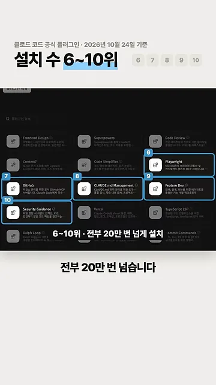
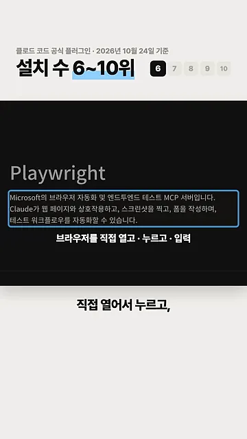
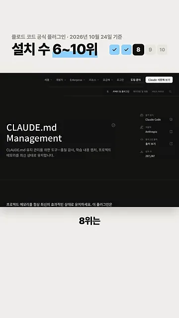
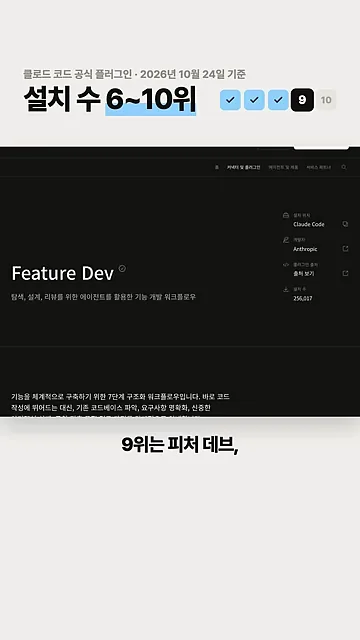
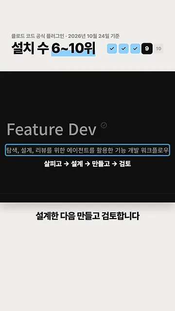
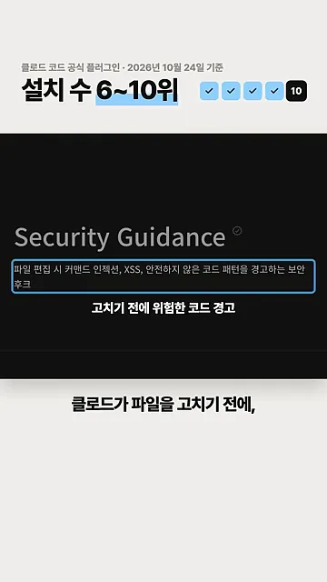
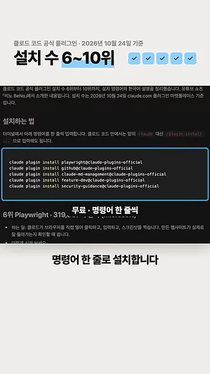
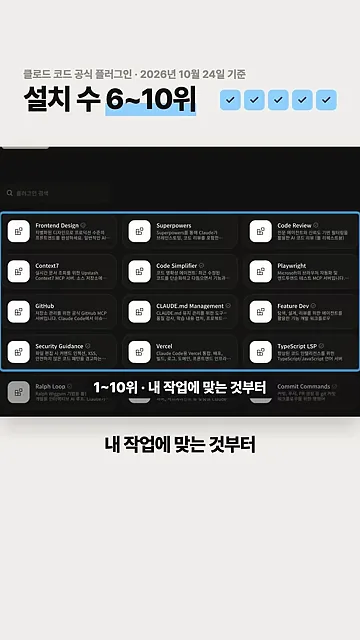

6·7위: 브라우저와 GitHub를 클로드에 붙여요
영상은 공식 플러그인 마켓플레이스 화면에서 6위부터 10위까지 다섯 개를 파란 테두리와 번호로 표시하며 시작해요. 아래 자막처럼 다섯 개 모두 20만 번 넘게 설치됐어요. 상단에는 '2026년 10월 24일 기준'이라는 집계 날짜가 적혀 있어요.

화자가 읽은 설치 수를 같은 눈금에 그려 보면 이래요. 6위와 7위는 거의 붙어 있고, 10위까지 내려와도 차이는 8만 번 정도예요.
6위 Playwright — 브라우저를 직접 다뤄요
상세 화면 설명에는 'Microsoft의 브라우저 자동화 및 엔드투엔드 테스트 MCP(Model Context Protocol) 서버'라고 적혀 있어요. 영상 자막은 이걸 '브라우저를 직접 열고 · 누르고 · 입력'으로 줄였어요. 클로드가 웹 페이지를 열어 버튼을 누르고, 글자를 넣고, 스크린샷까지 찍을 수 있다는 뜻이에요.

7위 GitHub — 이슈 등록과 코드 검토
GitHub 플러그인도 공식 GitHub MCP 서버를 붙인 거예요. 화면 설명에는 이슈 생성, PR(Pull Request) 관리, 코드 리뷰, 저장소 검색이 나열돼 있어요. 화자는 이걸 'GitHub에 할 일을 등록하고 올라온 코드 변경을 검토한다'고 풀어 말해요. 설치 수는 6위와 거의 같은 약 32만 번이에요.

8~10위: 작업 순서와 안전을 잡아 주는 플러그인
8위 CLAUDE.md Management — 설명서를 최신으로
CLAUDE.md는 클로드가 매번 읽는 프로젝트 설명서예요. 이 플러그인은 그 파일의 품질을 점검하고, 작업하며 알게 된 내용을 붙잡아 적어 둬요. 화면 설명은 '품질 감사, 학습 내용 캡처, 프로젝트 메모리를 최신 상태로 유지'예요.

9위 Feature Dev — 살피고, 설계하고, 만들고, 검토하고
기능 하나를 바로 짜지 않고 단계를 밟게 하는 플러그인이에요. 화면 설명은 '탐색, 설계, 리뷰를 위한 에이전트를 활용한 기능 개발 워크플로우'이고, 아래 자막은 그 순서를 화살표 네 칸으로 보여 줘요. 설치 수는 256,017번이에요.

10위 Security Guidance — 고치기 전에 경고
클로드가 파일을 편집하려는 순간에 동작해요. 화면 설명에는 커맨드 인젝션, XSS(Cross-Site Scripting), 안전하지 않은 코드 패턴을 경고하는 보안 훅이라고 적혀 있어요. 해킹에 뚫리기 쉬운 코드가 들어가기 전에 멈춰 세우는 장치예요.

설치는 명령어 한 줄씩
다섯 개 모두 무료예요. 화면에는 터미널에서 입력할 설치 명령어 다섯 줄이 나와요. 형식은 모두 같고, @ 앞의 플러그인 이름만 달라요.

화면에서 읽은 명령어를 그대로 옮기면 이래요.
claude plugin install playwright@claude-plugins-official
claude plugin install github@claude-plugins-official
claude plugin install claude-md-management@claude-plugins-official
claude plugin install feature-dev@claude-plugins-official
claude plugin install security-guidance@claude-plugins-official어떤 이름이 어떤 플러그인인지 영상 내용과 맞춰 보면 이래요.
| 순위 | 설치할 때 쓰는 이름 | 설치 수 (영상 기준) | 하는 일 |
|---|---|---|---|
| 6위 | playwright | 약 32만 번 | 브라우저를 열고 누르고 입력하고 화면을 찍어요 |
| 7위 | github | 약 32만 번 | 할 일을 등록하고 올라온 코드 변경을 검토해요 |
| 8위 | claude-md-management | 287,247번 | 설명서 파일을 점검하고 배운 걸 적어 둬요 |
| 9위 | feature-dev | 256,017번 | 살피고, 설계하고, 만들고, 검토해요 |
| 10위 | security-guidance | 약 24만 번 | 고치기 전에 위험한 코드를 경고해요 |
영상은 1위부터 10위까지 전체 목록으로 돌아가 마무리해요. 화자는 이 가운데 내 작업에 맞는 것부터 하나씩 깔면 된다고 말해요.
